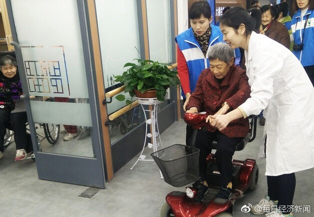

回复@双份水果硬糖v4:我倒是不太担心这个。我总感觉，几十年上百年后，绝大多数工作已经不需要人去做了。甚至战争也不需要人在一线了，只要有一小部分人在后面指挥机器就可以。那时候人类主要的任务是享受生活。当然我说的是人类总体。国家和民族的问题就需要具体探讨了@每日经济新闻:#我与两会零距离#【两会代表委员建议：全国推广“独生子女照料陪护假”】此前，全国已有8个省份通过地方立法建立了独生子女家庭老年人护理假制度。有全国人大代表建议，在取得成功经验后，有必要在全国范围推广，让更多的人享受到这一制度红利。两会代表委员建议：全国推广“独生子女照料陪护假” 
回复@东艾西通杜:给人出主意买红利基金的是没有认真思考。人家要求是持续分红，因为要生活。红利指数虽然每年有3-4的股息率，但是基金可不保证每年分红。亏损年度就可以不分，那时候卖掉等于底部割肉。然后就像去年一年又分掉30%。这都不符合人家的要求。长期，持续从组合中提取资金是要认真设计的。@ETF拯救世界:现在最高的一篇阅读已经4.6万了。离10万+还远吗。也是一种成就感啊。要知道我这种可不是什么蹭热点抓眼球的文章……
回复@你在红楼我在西游V:10%，基本是7年翻一番。可能有人觉得太少太少了。类比一下房价。10%年化，目前北京均价可能5-6万。7年后就是10-12万，14年后就是20-24万，21年后就是40-48万。不出现恶性通胀，这个可能性有多大，不知道~@ETF拯救世界:现在最高的一篇阅读已经4.6万了。离10万+还远吗。也是一种成就感啊。要知道我这种可不是什么蹭热点抓眼球的文章……
回复@卧梅-闻花:昨天我公众号发的那段话就是这个意思。能赚多少，谁也不知道。因为谁也不知道未来市场会怎么走。我能做到的，就是在投入金融市场这个前提下，尽量做到最好。@ETF拯救世界:现在最高的一篇阅读已经4.6万了。离10万+还远吗。也是一种成就感啊。要知道我这种可不是什么蹭热点抓眼球的文章……
回复@左边是璞玉wwwwwww21985:股市走势我只从三个维度观察：长期看估值，中短期看资金和情绪。政策之类的会影响的还是资金和情绪，所以最关键的还是这三个维度。//@左边是璞玉wwwwwww21985:等于不等于是数学问题 那么问题来了 宏观经济对股市的影响有多大呢 倾巢之下岂有完卵 @ETF拯救世界:现在最高的一篇阅读已经4.6万了。离10万+还远吗。也是一种成就感啊。要知道我这种可不是什么蹭热点抓眼球的文章……
回复@kaka涛:宏观经济≠股市走势。//@kaka涛:有观点说现在的改革政策还是比较给力，经济也有触底迹象，1819年有可能开启新一轮牛市，你怎么看？@ETF拯救世界@ETF拯救世界:现在最高的一篇阅读已经4.6万了。离10万+还远吗。也是一种成就感啊。要知道我这种可不是什么蹭热点抓眼球的文章……
很多人可能又忘了老巴和对冲基金的十年赌约了。这十年，美股牛市，标普500秒杀所有组合中的基金。十年标普500涨幅125%，组合里的对冲基金最大收益88%，最小才2.8%。炒股，很多东西不是那么简单的。@ETF拯救世界:现在最高的一篇阅读已经4.6万了。离10万+还远吗。也是一种成就感啊。要知道我这种可不是什么蹭热点抓眼球的文章……
回复@asdasdsadasdadad:不是涨幅问题。是你能赚多少问题。有些10倍股，绝大多数人也就赚个30%、50%。为什么，有几个人能拿住股票？你知道多少是贵？心里不踏实，根本就拿不住。踏踏实实拿住指数去掉头尾吃到大部分利润，秒杀绝大多数追涨杀跌的股民。你以为牛市都挣钱么，错，大牛市也只有70%的人挣钱@ETF拯救世界:现在最高的一篇阅读已经4.6万了。离10万+还远吗。也是一种成就感啊。要知道我这种可不是什么蹭热点抓眼球的文章……
回复@美食嬷嬷茶:没错。我特别建议投ETF的时候也自己投股票。大部分人发现自己炒股没天分就踏实了。小部分发现有天分以后就能赚更多了。可以说百利无一害//@美食嬷嬷茶:所以益达建议7 3比例分配计划和自己操作股票，万一自己有股神的潜质呢 评论配图@ETF拯救世界:现在最高的一篇阅读已经4.6万了。离10万+还远吗。也是一种成就感啊。要知道我这种可不是什么蹭热点抓眼球的文章……
回复@依然肉多多ETF:真正的牛市，能跑赢一个好的ETF组合的买股票的人会非常少。信不信由你，我先把话撂这儿。指数基金最大的作用是在牛市才能被发挥出来。//@依然肉多多ETF:我周围有20多年股龄的老人都认为熊市才买etf，牛市买股票@ETF拯救世界:现在最高的一篇阅读已经4.6万了。离10万+还远吗。也是一种成就感啊。要知道我这种可不是什么蹭热点抓眼球的文章……
几率很小的。现在希望你多生，以后zc倾向一定是打压独生子女的zc，怎么会给你这种假//@佐罗_厚恩投资:转发微博@每日经济新闻:#我与两会零距离#【两会代表委员建议：全国推广“独生子女照料陪护假”】此前，全国已有8个省份通过地方立法建立了独生子女家庭老年人护理假制度。有全国人大代表建议，在取得成功经验后，有必要在全国范围推广，让更多的人享受到这一制度红利。两会代表委员建议：全国推广“独生子女照料陪护假”